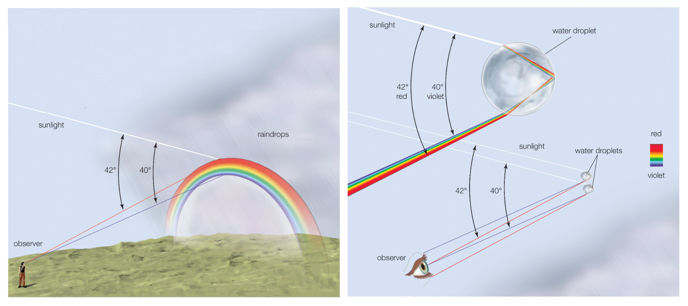

What a rainbow needs
A rainbow requires many liquid droplets that are illuminated by direct light. Light entering such a droplet is refracted, reflected inside the droplet, and refracted again when it leaves. Because the refractive index of the liquid depends slightly on wavelength, the outgoing light is separated by colour. On Earth, this usually happens in water droplets illuminated by the Sun.
The mechanism is not restricted to water. If a different liquid forms the droplets, the rainbow angle changes. On Titan, a moon of Saturn, liquid methane can fall as rain. Methane has a lower refractive index than water, so a methane rainbow would appear at a larger angular distance from the point opposite the Sun than a terrestrial rainbow. Venus is different again: its cloud droplets consist mainly of sulfuric acid solution. Such droplets have a higher refractive index, which would shift the corresponding bow to smaller angles. The colour separation would also differ, because dispersion depends on the liquid and on the wavelength range of the incoming light.

Why Titan and Venus probably do not show familiar rainbows
The limiting factor is direct light. A familiar rainbow is seen when falling droplets are illuminated directly and the observer looks in the right direction. On Titan, visible sunlight is strongly weakened and scattered by the dense haze. On Venus, an observer trying to see such rain would also be below an opaque cloud deck. These conditions make a familiar rainbow in the sky unlikely, even though suitable liquid droplets are present.
Rainbows on exoplanets
For exoplanets, the same physics applies. It is entirely possible that planets around other stars have rainbows, especially if they have liquid droplets that are directly illuminated by their host star. The colours could differ from those on Earth, for example if the star is hotter and bluer than the Sun, or cooler and redder.
Observing such rainbows would be much harder. Rainbows are local features: they occur only where falling droplets, direct starlight, and the observer have the right geometry. Even with the new telescopes expected in the near future, we will not spatially resolve an Earth-like exoplanet well enough to see such local arcs on its disk. The whole illuminated planet is measured as one tiny point of light. In addition, rain would often occur below clouds, so from space the raindrops would be partly or completely hidden by the cloud deck above them.
Searching for cloudbows on exoplanets
Cloudbows are more promising than rainbows for exoplanet observations. A cloudbow is produced by droplets near the tops of clouds. Those droplets can be directly illuminated by the host star and visible from space. The droplets are much smaller than raindrops, so the colour bands overlap strongly and the cloudbow appears white. With polarisation filters, the weak colour separation can become easier to detect.
For exoplanets, we would still not see a bow-shaped arc. Instead, we would search for a peak in the polarisation signal of reflected starlight at a particular phase angle as the planet moves along its orbit. The phase angle is the angle between the observer, the planet, and the host star. The precise phase angle where the peak occurs, and the shape of the peak, can tell us about the type of liquid in the clouds and the size of the droplets. We know from planets in our own Solar System that this method can work: already in 1974, polarisation measurements of Venus as a whole planet showed that its clouds are made of tiny sulfuric-acid droplets.
This is where cloudbow physics connects to my research. The total brightness and, even more strongly, the polarisation of reflected light carry information about the size, composition, and shape of cloud droplets. By measuring such scattering features in the light of an exoplanet, we may one day find liquid-water clouds on distant worlds.